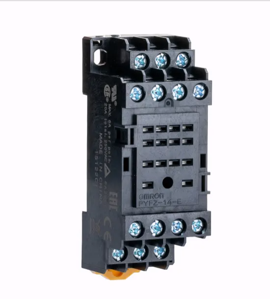

รีเลย์ (Relay)
Relay
สวิตช์แม่เหล็กไฟฟ้า • COM/NO/NC • SPDT/DPDT • ขับด้วยทรานซิสเตอร์ + ไดโอดกันย้อน
Electromagnetic switch • COM/NO/NC • SPDT/DPDT • Transistor driver + flyback diode
ลองเล่น ห้องแล็บวงจรรีเลย์ MY4 — ต่อวงจรควบคุม 24VDC เอง พร้อมตัวอย่าง self-holding / interlock และมุมมองแผนภาพ Try the MY4 Relay Control Lab — build 24VDC control circuits with self-holding / interlock examples and a ladder-diagram view
- อธิบายหลักการทำงานของรีเลย์ในฐานะสวิตช์แม่เหล็กไฟฟ้าได้
- บอกความหมายของขา COM / NO / NC และรูปแบบหน้าสัมผัส (SPST/SPDT/DPDT) ได้
- อ่านสเปคแรงดันคอยล์และพิกัดหน้าสัมผัสจาก datasheet ได้
- ออกแบบวงจรขับรีเลย์ด้วยทรานซิสเตอร์ พร้อมไดโอดกันแรงดันย้อน (flyback) ได้
- ตรวจสอบรีเลย์และหาขาด้วยมัลติมิเตอร์ได้
- Explain how a relay works as an electromagnetic switch
- Identify the COM / NO / NC pins and contact forms (SPST/SPDT/DPDT)
- Read coil voltage and contact ratings from a datasheet
- Design a transistor relay-driver circuit with a flyback diode
- Test a relay and identify its pins with a multimeter
- สวิตช์ที่ทำงานด้วยแม่เหล็กไฟฟ้า ไม่ใช้มือกด
- ป้อนไฟเข้า คอยล์ เล็กน้อย → ดูดหน้าสัมผัสให้เปิด/ปิดวงจรโหลด
- แยกวงจรควบคุม (ไฟต่ำ) ออกจากวงจรโหลด (ไฟสูง) ทางไฟฟ้า
- ให้สัญญาณ 5 V จากไมโครคอนโทรลเลอร์ควบคุมไฟ AC 220 V ได้อย่างปลอดภัย
- A switch operated by an electromagnet, not by hand
- A small current into the coil pulls contacts to open/close the load circuit
- Electrically isolates the control side (low power) from the load side (high power)
- Lets a 5 V microcontroller signal safely switch 220 V AC mains
รีเลย์เหมือน "มือกล" ที่ใช้แม่เหล็กไฟฟ้าตัวเล็กไปกดสวิตช์ตัวใหญ่แทนเรา — เราใช้แรงน้อยๆ (ไฟคอยล์) ไปสั่งงานที่ใช้แรงมาก (ไฟโหลด) โดยมือเราไม่ต้องไปแตะไฟแรงสูงเลย
A relay is like a "robotic finger": a tiny electromagnet presses a big switch for you. A small effort (coil current) commands a large one (load current) — without your hand ever touching the high-power side.
- คอยล์ (Coil): ขดลวดพันรอบแกนเหล็ก — ป้อนไฟแล้วกลายเป็นแม่เหล็กไฟฟ้า
- คาน/อาร์เมเจอร์ (Armature): เหล็กที่ถูกแม่เหล็กดูด ทำให้หน้าสัมผัสขยับ
- สปริง: ดึงคานกลับเมื่อไม่มีไฟคอยล์
- หน้าสัมผัส: COM (ขั้วร่วม), NO, NC
- Coil: wire wound on an iron core — becomes an electromagnet when powered
- Armature: iron lever pulled by the magnet, moving the contacts
- Spring: returns the lever when the coil is off
- Contacts: COM (common), NO, NC
สปริงดึงคานไว้ → COM แตะอยู่กับ NC (NC = "ปกติต่อไฟไว้")
ฝั่ง NO ยังไม่ต่อถึงกัน
The spring holds the lever → COM touches NC (NC = "normally connected").
The NO side is not connected.
แม่เหล็กดูดคาน → COM ย้ายมาแตะ NO (NO = "ปกติไม่ต่อ พอป้อนไฟจึงต่อ")
ฝั่ง NC หลุดออก หยุดต่อ
The magnet pulls the lever → COM switches to NO (NO = "normally not connected; connects when powered").
The NC side is now disconnected.
ฝั่งสวิตช์ของรีเลย์ (แบบที่พบบ่อยสุด) มี 3 ขา เข้าใจ 3 ขานี้ก็เข้าใจรีเลย์ทั้งตัว วิธีจำที่ง่ายที่สุดคือ ดูตอนรีเลย์ "พัก" (ยังไม่ป้อนไฟคอยล์) ว่าขานั้นแตะกับ COM อยู่หรือเปล่า
The switch side of a relay (the most common kind) has 3 pins. Understand these 3 and you understand the whole relay. The easiest trick: at rest (coil off), does this pin touch COM or not?
เส้นทางหลักที่ไฟวิ่งเข้ามา แล้วคานภายใน "สลับ" ให้ออกไปทาง NO หรือ NC ทีละทาง (ไม่มีทางต่อทั้งคู่พร้อมกัน)
The main wire power comes in on. The internal lever routes it out to either NO or NC — one at a time, never both.
NC (Normally Closed) แตะ COM ตั้งแต่ยังไม่ป้อนไฟ
NO (Normally Open) ยังไม่แตะ ต้องป้อนไฟคอยล์ก่อนจึงจะแตะ
NC (Normally Closed) already touches COM.
NO (Normally Open) touches only after the coil is powered.
| สถานะคอยล์Coil | COM ต่อกับCOM connects to | เกิดอะไรขึ้นResult |
|---|---|---|
| ⚪ OFF (พัก)⚪ OFF (rest) | NC | โหลดที่ต่อกับ NC ทำงาน / โหลดที่ NO ดับLoad on NC is ON / load on NO is OFF |
| 🔵 ON (ป้อนไฟคอยล์)🔵 ON (energized) | NO | โหลดที่ต่อกับ NO ทำงาน / โหลดที่ NC ดับLoad on NO is ON / load on NC is OFF |
ในวงจรไฟฟ้า คำว่า Closed = ต่อถึงกัน ไฟไหลผ่านได้ (เหมือนสวิตช์ไฟที่กด "ติด") ส่วน Open = ขาด ไฟไม่ไหล — ตรงข้ามกับ "ปิดประตู" ในภาษาพูด! ดังนั้น Normally Closed = ปกติต่อไฟไว้ ไม่ใช่ "ปกติปิดกั้น" อย่างที่ชื่อชวนให้เข้าใจผิด
In circuits, Closed = connected, current flows (like a light switch turned ON), and Open = broken, no current — the opposite of "closing a door"! So Normally Closed = normally conducting, not "normally blocking."
แล้วชื่อ SPST / SPDT / DPDT ล่ะ?
What about SPST / SPDT / DPDT?
เป็นแค่ชื่อบอกว่ารีเลย์ตัวนั้น "สลับได้กี่วงจร" และ "แต่ละวงจรไปได้กี่ทาง"
These names just tell you how many circuits a relay switches, and how many ways each can go.
- Pole (ขั้ว): สลับได้กี่วงจรพร้อมกัน = มี COM กี่ชุด
- Throw (ทาง): COM ไปได้กี่ปลายทาง (1 = NO อย่างเดียว, 2 = NO + NC)
- Pole: how many circuits switch together = how many COMs
- Throw: how many destinations COM has (1 = NO only, 2 = NO + NC)
| แบบType | ความหมายMeaning |
|---|---|
| SPST | 1 ขั้ว 1 ทาง — แค่เปิด/ปิด (มี NO อย่างเดียว)1 pole, 1 throw — plain ON/OFF (NO only) |
| SPDT | 1 ขั้ว 2 ทาง — มีครบ COM + NO + NC (พบบ่อยสุด)1 pole, 2 throw — full COM + NO + NC (most common) |
| DPDT | 2 ขั้ว 2 ทาง — เหมือน SPDT สองชุดในตัวเดียว2 pole, 2 throw — two SPDTs in one |
- PYFZ-14-E (หรือ PYF14A-E) คือ ซ็อกเก็ต (ฐานเสียบ) 14 ขา ไม่ใช่ตัวรีเลย์ — ตัวรีเลย์ที่เสียบลงไปคือตระกูล MY4 / LY4
- MY4 เป็นแบบ 4PDT = มี 4 ชุดหน้าสัมผัส (4 poles) แต่ละชุดมี COM / NO / NC ครบ
- นับขา: 4 ชุด × 3 = 12 ขาหน้าสัมผัส + คอยล์ 2 ขา = 14 ขา
- ทั้ง 4 ชุดสลับ พร้อมกัน เมื่อป้อนไฟคอยล์ (energize) ครั้งเดียว
- PYFZ-14-E (or PYF14A-E) is the 14-pin socket (base), not the relay itself — the relay that plugs in is the MY4 / LY4 family.
- MY4 is 4PDT = 4 contact sets (4 poles), each with its own COM / NO / NC.
- Pin count: 4 sets × 3 = 12 contact pins + 2 coil pins = 14.
- All 4 sets switch together from a single coil energize.

ผังขา (เลขขาบนซ็อกเก็ต)
Pin map (numbers on the socket)
| ชุดหน้าสัมผัสContact set | NC (ปกติต่อ)NC (closed at rest) | COM (ขั้วร่วม / ทางเข้า)COM (common / input) | NO (ปกติไม่ต่อ)NO (open at rest) |
|---|---|---|---|
| ชุดที่ 1 (Pole 1) | 1 | 9 | 5 |
| ชุดที่ 2 (Pole 2) | 2 | 10 | 6 |
| ชุดที่ 3 (Pole 3) | 3 | 11 | 7 |
| ชุดที่ 4 (Pole 4) | 4 | 12 | 8 |
| ⚡ คอยล์ (ป้อนไฟ / Energize):⚡ Coil (Energize): ขา 13 และ 14pins 13 and 14 | |||
- ขา 1–4 = NC ทั้งหมด
- ขา 5–8 = NO ทั้งหมด
- ขา 9–12 = COM ทั้งหมด
- ขา 13–14 = คอยล์ (ป้อนไฟตรงนี้)
- Pins 1–4 = all NC
- Pins 5–8 = all NO
- Pins 9–12 = all COM
- Pins 13–14 = coil (energize here)
เลขขาด้านบนเป็น ผังมาตรฐานของรีเลย์ 4PDT (MY4/LY4) — ควรเทียบกับ ผังที่พิมพ์อยู่ข้างตัวรีเลย์และบนซ็อกเก็ต อีกครั้ง แล้วยืนยันด้วยมัลติมิเตอร์ (โหมด Ω หาคอยล์ + continuity หา NC/NO) ตามหัวข้อถัดๆ ไป
The numbers above are the standard 4PDT (MY4/LY4) layout — always cross-check the diagram printed on the relay body and socket, then confirm with a multimeter (Ω to find the coil, continuity to find NC/NO) as shown in the sections below.
ฝั่งคอยล์ (Control)
Coil side (Control)
- แรงดันคอยล์: ที่นิยม 5 V, 12 V, 24 V DC
- ความต้านทานคอยล์: เช่น 70 Ω, 400 Ω
- กระแสคอยล์หาได้จาก I = V / R
- Coil voltage: commonly 5 V, 12 V, 24 V DC
- Coil resistance: e.g. 70 Ω, 400 Ω
- Coil current is found from I = V / R
ฝั่งหน้าสัมผัส (Load)
Contact side (Load)
- พิกัดหน้าสัมผัส: เช่น 10 A 250 VAC / 10 A 30 VDC
- ห้ามต่อโหลดเกินพิกัด → หน้าสัมผัสไหม้/ติดกัน
- โหลดเหนี่ยวนำ (มอเตอร์) ให้เผื่อพิกัดมากขึ้น
- Contact rating: e.g. 10 A 250 VAC / 10 A 30 VDC
- Never exceed the rating → contacts burn or weld shut
- Inductive loads (motors) need extra margin
| ชนิดType | ลักษณะเด่นKey feature | ใช้งานUse case |
|---|---|---|
| แม่เหล็กไฟฟ้า (EMR)Electromechanical (EMR) | มีคอยล์+หน้าสัมผัสจริง ได้ยินเสียง "คลิก"Real coil + contacts, audible "click" | ทั่วไป, สวิตช์ไฟ AC/DCGeneral AC/DC switching |
| รีดรีเลย์ (Reed)Reed | หน้าสัมผัสในหลอดแก้ว เล็ก-เร็ว กระแสต่ำContacts in a glass tube, small/fast, low current | สัญญาณ, เครื่องมือวัดSignal, instrumentation |
| โซลิดสเตต (SSR)Solid State (SSR) | ไม่มีชิ้นส่วนเคลื่อนที่ ใช้เซมิคอนดักเตอร์ เงียบ-เร็ว-ทนทานNo moving parts, semiconductor-based, silent/fast/durable | สวิตช์ AC บ่อยๆ, ฮีตเตอร์Frequent AC switching, heaters |
| รีเลย์รถยนต์Automotive | 12 V ทนกระแสสูง (เลขขา 85/86/30/87)12 V, high current (pins 85/86/30/87) | ไฟหน้า, ปั๊ม, ฮอร์นHeadlights, pumps, horns |
ขา GPIO ของไมโครคอนโทรลเลอร์จ่ายกระแสได้น้อย (~20 mA) แต่คอยล์รีเลย์อาจกินมากกว่านั้น จึงใช้ ทรานซิสเตอร์เป็นสวิตช์ (ทำงานย่าน Saturation) มาขับคอยล์
A microcontroller GPIO pin sources little current (~20 mA), but a relay coil may need more — so we use a transistor as a switch (in saturation) to drive the coil.
คอยล์คือตัวเหนี่ยวนำ — ตอน ตัดไฟ มันสร้าง แรงดันย้อนกลับ (back-EMF) สูงหลายร้อยโวลต์ ซึ่งจะ ทำลายทรานซิสเตอร์ ได้ ต่อไดโอด (เช่น 1N4001) คร่อมคอยล์แบบกลับขั้ว เพื่อให้กระแสย้อนไหลวนปลอดภัย
The coil is an inductor — when switched off it generates a high back-EMF (hundreds of volts) that can destroy the transistor. Place a diode (e.g. 1N4001) reverse-biased across the coil so the reverse current circulates safely.
- ควบคุมอุปกรณ์ไฟ AC 220 V (หลอดไฟ, พัดลม, ปั๊มน้ำ) ด้วยบอร์ดไมโครฯ
- ระบบอัตโนมัติในบ้าน / IoT (Smart home)
- ระบบไฟรถยนต์ (ไฟหน้า, ฮอร์น, สตาร์ท)
- Switching 220 V AC appliances (lamps, fans, water pumps) from a microcontroller
- Home automation / IoT (smart home)
- Automotive electrical systems (headlights, horn, starter)
- วงจรล็อก/อินเตอร์ล็อก เพื่อความปลอดภัย
- สลับสัญญาณ/เปลี่ยนเส้นทางวงจร (SPDT/DPDT)
- แยกกราวด์ระหว่างวงจรควบคุมกับวงจรกำลัง
- Latching / interlock circuits for safety
- Routing signals / switching circuit paths (SPDT/DPDT)
- Ground isolation between control and power circuits
- หาคอยล์: ตั้งโหมด Ω แล้ววัดหาคู่ขาที่มีค่าความต้านทาน (เช่น 70–400 Ω) = ขาคอยล์ 2 ขา
- หา NC: ตั้งโหมด continuity วัด COM กับขาที่เหลือ — คู่ที่ ดังปี๊บตอนยังไม่ป้อนไฟ คือ COM–NC
- หา NO: คู่ที่ ไม่ต่อ ตอนยังไม่ป้อนไฟ คือ COM–NO
- ทดสอบ: ป้อนไฟตรงตามแรงดันคอยล์ → ได้ยินเสียง "คลิก" และ COM–NO ต่อถึงกัน (NC จะตัด)
- Find the coil: in Ω mode, the pin pair showing resistance (e.g. 70–400 Ω) is the coil.
- Find NC: in continuity mode, the COM pair that beeps with the coil OFF is COM–NC.
- Find NO: the pair that is open with the coil OFF is COM–NO.
- Test: apply the rated coil voltage → you hear a "click" and COM–NO becomes connected (NC opens).
- ไฟ AC 220 V อันตรายถึงชีวิต — ฝั่งโหลดต้องเดินสายและหุ้มฉนวนให้มิดชิด
- เลือกพิกัดหน้าสัมผัสให้ สูงกว่ากระแสโหลดจริง เสมอ
- โหลด AC แนะนำต่อผ่าน NO เพื่อให้ "ปกติตัดไฟ" ปลอดภัยกว่า
- อย่าลืม ไดโอดกันแรงดันย้อน เมื่อขับด้วยทรานซิสเตอร์
- โหลดเหนี่ยวนำ AC (มอเตอร์) ควรใส่ snubber (RC) ลดอาร์กที่หน้าสัมผัส
- 220 V AC can be lethal — wire and insulate the load side properly
- Always pick a contact rating above the real load current
- Prefer wiring AC loads through NO so the default state is OFF (safer)
- Never forget the flyback diode when driving with a transistor
- For inductive AC loads (motors), add an RC snubber to reduce contact arcing